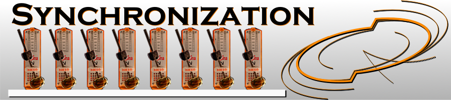
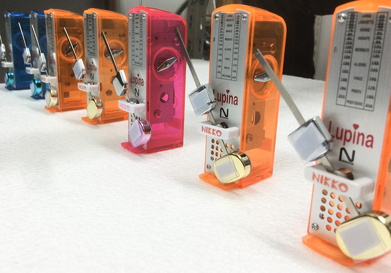
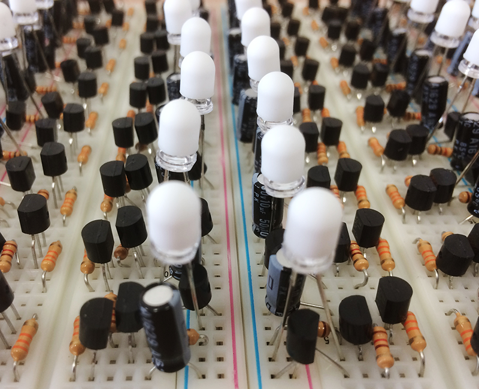

シンクロ班
Introduction - 不思議とリズムが合う！？ -
はじめに、不思議な蛍のお話をしましょう。
蛍は、お尻の部分が光り、消え、また光り、また消え、をリズミカルに繰り返します。
不思議なことは、東南アジアのある種の蛍が数百匹集まると、どういうわけかタイミングを会わせて一斉に点滅を始めてしまうのです。言い換えれば、ホタルがかってに「シンクロ」してしまうのです。ただ集まっただけで、蛍にはリーダーも何もいないはずなのに…
さて、なぜ物理学科の展示で蛍なのでしょうか。実は、このリズムが合ってしまう現象が、生物学ではなく物理学・数学を使って解明されているからなのです。
私たちの班では、このようはシンクロ現象に焦点を当てて調査・実験を行ってきました。どうしてシンクロするのか。しないことはあるのか。リズミカルに動く他の物ではどうか、といった、物理学として興味深い問題がこのシンクロ現象には眠っているのです。
「リズムが合う」を物理の目でみると
このリーダー不在のシンクロ現象が、どのように物理学を使って理解されているのでしょうか。
心臓の拍動のようなもので、蛍も自分のペースで振動しています。こういう「自主的にリズミカルに動く」ものを物理学の言葉で「振動子」と呼びます。
リズミカルな動きには、(1,2,3,4)で1サイクル、(1,2,3,4)でもう１サイクルといった要領で、番号が割り振れます。楽器の演奏が拍子に合わせて音を出すように、リズミカルな動きは、割り振った番号と対応させることができます。この割り当てた数を「位相」と言います。
また先ほどの蛍も、真っ暗な虫かごに閉じ込めておくとシンクロしません。方法はともかく「少しほかの個体とかかわりあう」というのも、シンクロには重要です。先ほどの位相をお互いにすこし早回す、巻き戻す効果として現れます。この結果、いくつかの振動子で位相が徐々にそろっていくことがあり、このとき人は「振動子がシンクロした」と感じるわけです。これが、物理学者のシンクロ現象へのまなざしです。
メトロノーム「が」リズムを合わせる
メトロノームは、リズミカルに動くものの代表といえましょう。メトロノームのテンポをそろえていくつかおいておき、糸で吊るした台の上に載せます。するとたちまちメトロノームの動きがシンクロしてしまうことがあります。比較的有名な例なので、YouTubeなどに多くの実験動画がアップロードされています。
私たちの班では、このメトロノームの置き方を工夫する、「歩行者と吊り橋」を模した配置にするなどして、メトロノームのシンクロ現象を調査しました。またメトロノームにセンサーを取り付け、より定量的に「シンクロの度合い」を測るなどの実験を行いました。
体を支えるシンクロ
意識してはいないと思いますが、私たちの体内でもシンクロ現象が起こっていると考えられています。
たとえば心臓では、ある細胞の一群が一定周期で活動を繰り返しています。このペースメーカーともいうべき一群はシナプスを介してつながっており、結果全体としてシンクロしています。これによって、心臓の安定した鼓動を作り出しているそうです。また、不整脈の中には、心臓の神経細胞が暴走して異常なシンクロ状態となってしまい、ペースメーカーの信号を押しのけてしまうために起こるものと考えられています。
私たちの班では、ペースメーカー細胞の動きを模した電子回路を作成し、そのふるまいを観察しました。
数百円でできるシンクロ実験
身近なものでできるシンクロ現象として、ペットボトル振動子という実験があります。ペットボトルの蓋に穴をあけ、管を通します。ペットボトルに水を入れて、管を通した蓋を閉じて逆さにすると、どうなるでしょうか？管が太いとドボドボ水が流れ、細いと逆に何も出ませんが、適切な太さ・長さの管を使うと中の水が少し抜けては、空気が入りをリズミカルに繰り返す、振動状態になります。
このセットを2本用意して、ペットボトルをチューブでつなげると、このリズムが揃ったり、タイミングが反転して揃ったりと、さまざまな現象が見られます。私たちの班ではこの実験器具を作成し、その動きの観察を行いました。